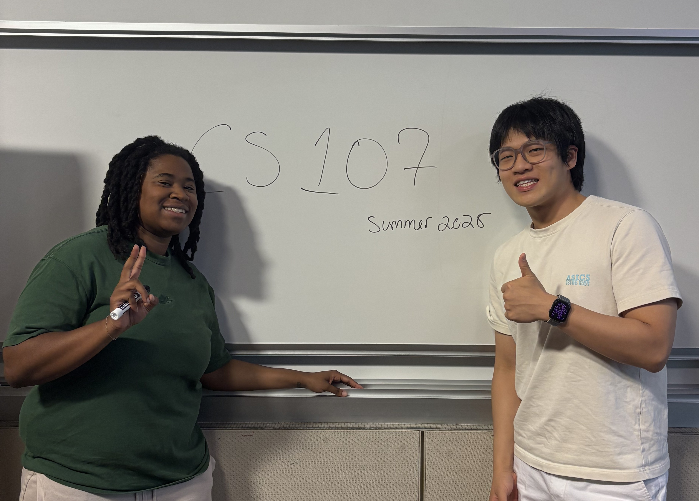
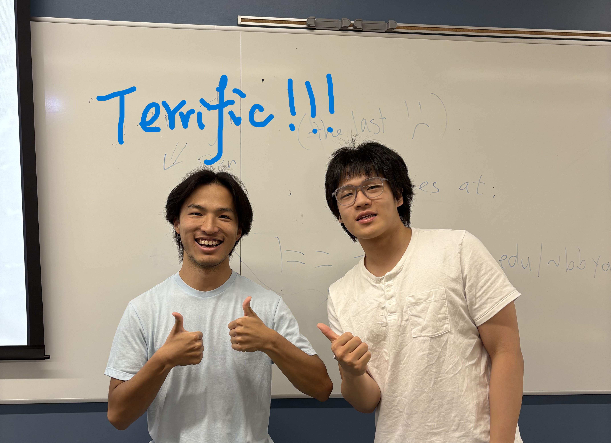
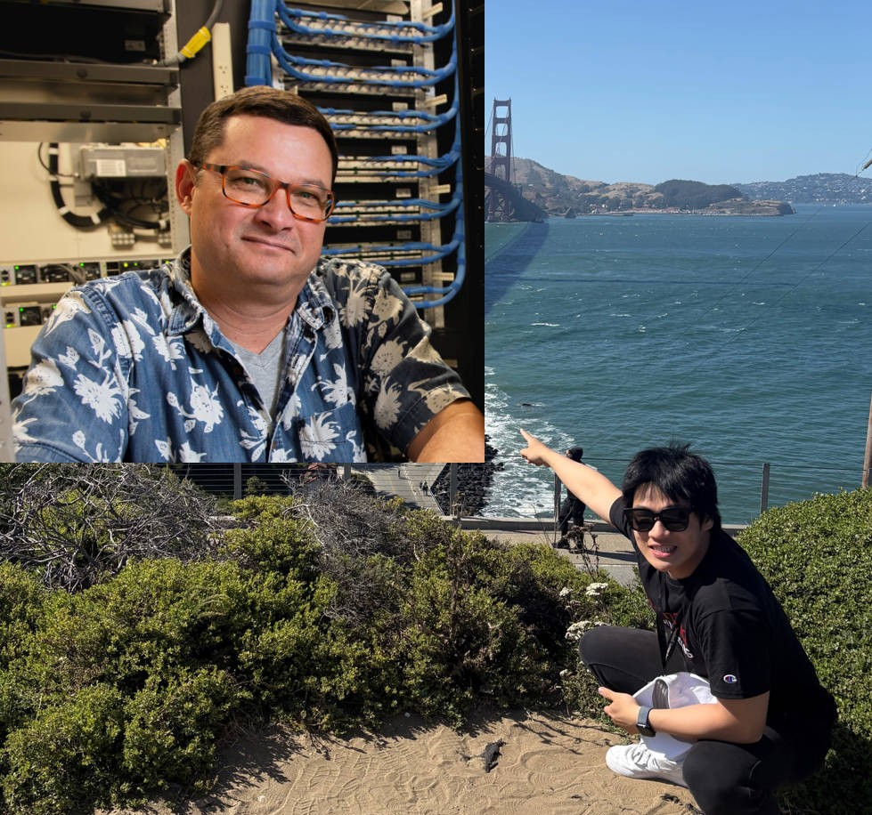
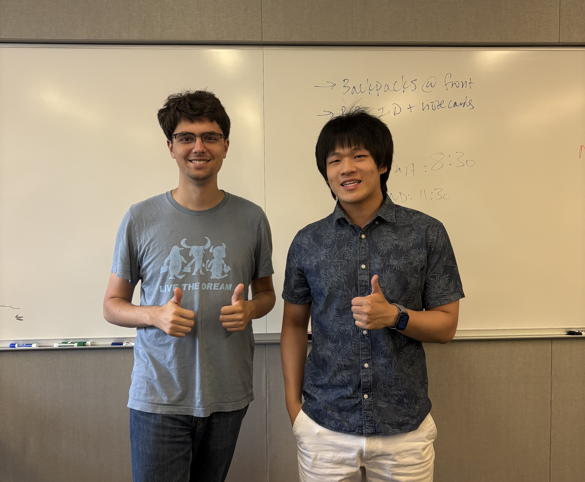

Spending my summer at Stanford was an incredible academic journey. I took two challenging courses that fundamentally changed how I think about computer science: CS107 Computer Organization & Systems and CS161 Design and Analysis of Algorithms. Both courses pushed me to my limits and helped me grow as a computer scientist.
CS107: Deep Dive into Systems
CS107 is my favorite course this summer, and I'm proud to say I earned an A+ (99/100). The homework was exceptionally well designed and perfectly solidified the knowledge we learned in lectures—it was my favorite part, super interesting, and I learned tremendously from each assignment.
Assignment 7: Heap Allocator
This was my absolute favorite assignment. Not only did I complete all the required functions, but I also finished all the challenge functions that weren't required. I wanted to see how far I could push myself, and I made it! I created a new structure that adds a footer at the end of free blocks to find the previous block, implementing a bidirectional free list that significantly improved allocation efficiency.
→ View my interactive Heap Allocator Visualization
An educational visualization demonstrating the concepts from this assignment
Assignment 6: Banking on Security
The Security Bomb assignment was one of the most intriguing challenges I've ever encountered. I successfully found vulnerabilities in the virtual bank and "stole the money"—all in a controlled, educational environment, of course! This assignment inspired me to explore real-life vulnerabilities.
Security Contribution to Stanford: Going beyond the assignment, I discovered critical vulnerabilities in Stanford's AFS (Andrew File System). Following responsible disclosure practices learned in the course, I:
- Identified and documented the security vulnerabilities
- Developed comprehensive solutions and patches
- Submitted a detailed report following Stanford's disclosure protocols
- Collaborated with the engineering team on implementation
Huge thanks to Adam Keppler for helping me connect with the corresponding engineer, and to Alex Keller from the engineering team—we had a very productive conversation about system security and implementing the solutions I proposed.
Amazing Teaching Team
Adam Keppler - The Inspiring Instructor
With Adam Keppler after our final lecture
Adam's teaching is simply amazing. He showed up to every single lecture with no exceptions, even though we had two instructors. His dedication was inspiring. We had wonderful conversations about computer systems concepts, my discovery of vulnerabilities, life, and everything in between.
I had never used GDB before this course, and I excitedly told him that I found a way to bypass the "bank protection alert" in our security assignment. He appreciated that I was a quick learner and encouraged me to explore further.
"I always asked tons of questions in lectures (that's pretty much why I sat in the first row!). Even when some questions were basic, Adam patiently answered my confusion and followed my thanks with a big smile and 'Absolutely!' His positive responses always inspired and encouraged students to think deeply."
I genuinely believe Adam's teaching style and encouragement were key factors in my success in this course.
Ola - Making Complex Topics Accessible
With Ola after the last lecture on final review session
Big thanks to Ola! Ola's humorous tone and teaching style made dense or potentially boring content feel interesting and relaxing. The analogies and live demos helped me connect the dots between lecture material and assignments in ways I hadn't expected.
After class, Ola was always friendly and open to questions, offering clear explanations of complex concepts that really helped solidify my understanding. Whether it was pointer arithmetic or assembly language intricacies, Ola had a way of making everything click.
Ben Yan - The Best TA I've Ever Met
Celebrating with Ben after the final lab
Ben Yan is, without a doubt, the best TA I have ever met. His slides weren't just informative—they were engaging and sometimes even entertaining. His teaching was super fluent, like that of a seasoned lecturer, and the meticulous, rigorous comments on our homework were incredibly helpful.
Go for it, Ben!
"Please stick to your teaching—it's terrific, and I want to be the first student when you become a lecturer!"
Ben's discussion section was highlight of my week. He had this remarkable ability to break down complex topics into digestible pieces while maintaining technical rigor. His feedback on assignments went above and beyond, often including additional resources and suggestions for further exploration.
Alex Keller - Security Expert and Mentor
A huge thanks to Alex Keller, Stanford's Senior Systems Security Engineer, who took time from his busy schedule to discuss the AFS vulnerabilities I discovered. Our productive conversation covered not just the technical aspects of the security issues, but also broader topics about systems security and career paths in the field.
What struck me most was Alex's philosophy: "If you do good work at Stanford, you will be rewarded with opportunities to do more good work." This perspective helped me understand that contributing to Stanford's security through responsible disclosure was valuable experience in itself—and motivation to continue learning and contributing wherever possible.
Alex brings unique expertise to Stanford, having coached Stanford Applied Cyber for 10 years. During our meeting, he showed me the team's training facilities and shared insights about competitive cybersecurity. His dedication recently paid off with Applied Cyber winning 1st place in both the ICS (Industrial Control Systems) and Goldbug CTFs in Las Vegas—an impressive achievement for the team.
Our discussion ranged from technical details of AFS architecture to career advice for aspiring systems engineers. Alex's willingness to mentor students and dedication to helping students with passion to chase their dream made our conversation particularly valuable. It's a shame that we didn't take a pic together but I believe we will see soon!
Key Takeaways
CS 107 wasn't just about learning C programming or understanding computer architecture—it was about developing a systems mindset. Through this course, I:
- Mastered low-level programming and memory management
- Gained practical experience with debugging tools like GDB and Valgrind
- Developed a security-conscious approach to systems programming
- Made real-world security contributions to Stanford's infrastructure
- Learned and practiced responsible vulnerability disclosure
- Built lasting connections with amazing instructors and engineering team
CS161: The Art of Algorithm Analysis
CS161 Design and Analysis of Algorithms was equally transformative, earning me an A (93/100). Before this course, I was lost in the maze of algorithmic complexity. How do you compare quicksort to mergesort? Why does one hash table outperform another? The sheer variety of algorithms and performance metrics seemed overwhelming.
CS161 taught me the fundamental philosophy that changed everything: evaluate algorithms analytically, not just empirically. Instead of just running code and timing it, we learned to ask deeper questions:
- Input Analysis: What happens in the best, worst, and average cases?
- Algorithm Decisions: How do pivot choices in quicksort or hash functions affect performance?
- Amortized Analysis: What's the cost over a sequence of operations, not just one?
This systematic approach transformed abstract concepts into concrete tools. Whether analyzing AVL tree rotations, understanding why hash tables achieve O(1) average time, or proving lower bounds for comparison sorting, the course provided a rigorous framework for thinking about efficiency.
Matthew Sotoudeh - The Algorithm Master
With Matthew Sotoudeh after the final exam
Huge thanks to Matthew Sotoudeh! I'm also hugely impressed by his written materials (CS161 Notes). Matthew considered everything comprehensively—the thinking behind lectures (I mean the pace and step-by-step depth) and even the snacks for asking questions were awesome!
He always repeats and interprets the questions asked by other students, which is so helpful because I sometimes couldn't hear or didn't understand what they said. This thoughtful approach made complex algorithm analysis accessible to everyone.
Projects Inspired by CS161
The algorithm concepts from CS161 directly inspired several of my visualization projects:
- Sorting Algorithm Visualizer - Interactive visualization of quicksort, mergesort, heapsort showing O(n log n) complexity
- Graph Algorithms Playground - BFS, DFS, Dijkstra's shortest path, and A* pathfinding with complexity analysis
- Hash Function & Collision Analysis - Demonstrating hash tables, collision resolution, and amortized O(1) operations
Looking Forward
My summer at Stanford fundamentally changed how I think about computer science. CS107 gave me deep systems knowledge while CS161 provided the analytical tools to evaluate and design efficient algorithms. The combination of theoretical knowledge and hands-on implementation has given me confidence to tackle complex problems.
To anyone considering Stanford's summer session: these courses are challenging but incredibly rewarding. With passionate instructors and a supportive community, you're not just learning material—you're developing a new way of thinking about computation.
Courses Taken:
• CS 107 - Computer Organization and Systems (A+, 99/100)
• CS 161 - Design and Analysis of Algorithms (A, 93/100)
Term: Summer 2025
Institution: Stanford University